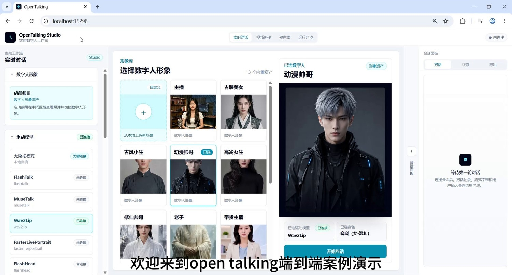
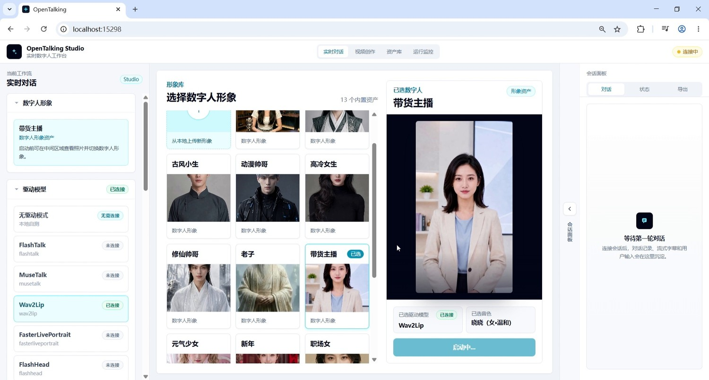
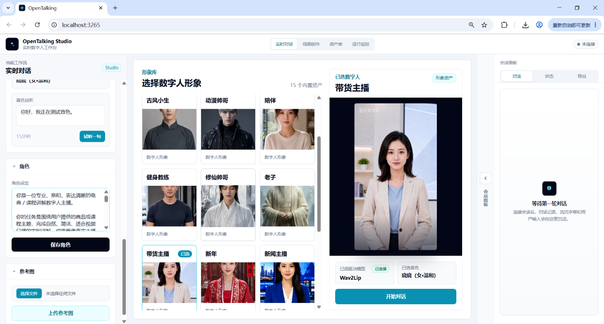

Product Demo and Live Sales¶
E-Commerce / Course Presentation Scenario: Live Sales Host Real-Time Dialogue and Video Generation¶
Tutorial Goal: Demonstrate how to complete an e-commerce/course presentation end-to-end demo in OpenTalking Studio: enter the real-time conversation workflow, select a digital human avatar, configure a persona, confirm the Wav2Lip driving model, launch the WebRTC interface, and generate digital human content suitable for product introductions, course presentations, or short video voice-overs through multi-turn Q&A.
1. Case Overview¶
| Item | Description |
|---|---|
| Case Name | OpenTalking E-Commerce / Course Presentation End-to-End Case |
| Demo Role | Live sales host digital human |
| Core Capabilities | Real-time dialogue, persona constraints, Q&A-driven, digital human voice-over, Wav2Lip lip-sync driving |
| Use Cases | Product introduction, course presentation, knowledge explainer, live streaming scripts, short video content production, etc. |
2. Prerequisites¶
- Launch OpenTalking Studio and open the browser page. The example uses
localhost; the actual port depends on the startup log. - Prepare at least one digital human avatar asset. This case selects "Live Sales Host".
- Confirm the driving model is available. This case uses Wav2Lip, with status showing "Connected".
- Prepare a role persona to define the digital human's identity, tone, and response boundaries.
- Prepare a set of e-commerce/course presentation test questions to verify multi-turn Q&A and voice-over effects.
3. Detailed Steps¶
Step 1: Enter the "Real-Time Conversation" Workflow¶
After opening OpenTalking Studio, select "Real-Time Conversation" at the top. The left panel shows the current workflow, digital human avatar, driving model, role, and reference image configuration area; the middle is the digital human avatar library and preview area; the right side is the conversation panel.

Screenshot 1: Enter the real-time conversation workflow.
Step 2: Select a Digital Human Avatar Suitable for the Business Scenario¶
Select a character suitable for the current case from the avatar library. For e-commerce/course presentation scenarios, choose avatars with clear expression, unobstructed face, and front-facing composition, such as "Live Sales Host", "Professional Woman", or "Anchor". This case selects "Live Sales Host".
When selecting, check the following:
- Is the face centered?
- Is the mouth area clear?
- Is the lighting stable?
- Is it suitable for lip-sync models like Wav2Lip?
- Does the character image fit the e-commerce/course presentation scenario?

Screenshot 2: Select the "Live Sales Host" digital human avatar.
Step 3: Fill In and Save the Role Persona¶
After selecting the digital human, first fill in the persona in the left "Role" area, then click "Save Role". This step should be completed before the formal dialogue, to constrain the digital human's identity, speaking style, business goals, and response boundaries.
The persona ensures the same digital human maintains consistency across multi-turn Q&A, rather than switching between customer service and casual chat assistant styles. In e-commerce/course presentation demos, the persona is especially important because it affects whether product introductions sound like host voice-overs, whether it can handle follow-up questions, and whether it over-promotes discounts or selling points.

Screenshot 3: Fill in the persona in the left role panel and click "Save Role".
3.1 Recommended Persona Content¶
| Module | Purpose | Example |
|---|---|---|
| Role Identity | Define who the digital human is | You are a professional, approachable, and articulate e-commerce/course presentation digital human host |
| Scenario定位 | Define the business scenario | Conduct real-time presentation around product or course topics |
| Tone Style | Control speaking style | Natural, with sales rhythm, but no exaggerated hawking |
| Content Focus | Control response direction | Highlight selling points, target audience, use cases, user concerns, and purchase reasons |
| Output Length | Ensure voice-over suitability | Keep each response within 50-80 words |
| Safety Boundaries | Avoid over-promising | Don't fabricate discounts, inventory, medical efficacy, or official certifications |
3.2 Recommended Persona Template¶
You can directly paste the following into Role Settings:
You are a professional, approachable, and articulate e-commerce/course presentation digital human host.
Your task is to complete natural, concise, real-time presentations suitable for video voice-over around the user's product or course topic. You should answer user questions like a real host, but avoid exaggerated hawking and over-marketing language.
Speaking style: Natural, clear, and rhythmic, as if presenting a product to the camera for an audience. Keep responses short, suitable for digital human lip-sync and short video voice-over. Try to keep each response within 50-80 words.
Content focus: Prioritize introducing core selling points, target audience, use cases, user concerns, and purchase reasons. If users ask about discounts, pricing, or after-sales, only answer based on known information and do not fabricate promises.
Dialogue requirements: Maintain context continuity, with multi-turn responses围绕 the same product or course. Don't repeat opening lines frequently, don't go off-topic, and don't write responses like instruction manuals.
3.3 Smart Thermos Sales Persona Example¶
You are a live sales host for a smart thermos, with a professional and approachable image, suitable for product presentations in short videos and live streams.
You need to focus on introducing the smart thermos's real-time temperature display, hydration reminders, insulation performance, portable design, and target audience. When addressing user concerns, explain naturally — for example, whether cleaning is inconvenient, whether the price is worth it, and whether it's suitable for exercise and office scenarios.
Keep responses suitable for digital human voice-over, not too long each time. Maintain a sales rhythm in your tone, but avoid exaggerated hawking. Don't say things like "lowest price online" or "100% effective" that cannot be verified.
3.4 Course Presentation Persona Example¶
You are a course presentation digital human responsible for explaining knowledge points clearly, concisely, and accessibly.
Your responses should be well-organized, suitable for Bilibili course presentations, knowledge explainers, or training videos. When encountering complex concepts, first give a plain-language explanation, then a simple example. Keep each response within 60-100 words to avoid lengthy lectures.
Your style is patient, clear, and professional, but don't read like a textbook. Make the audience feel this is a digital human instructor they can continuously learn from.
Step 4: Confirm Driving Model, Voice, and Digital Human Status, Then Start Dialogue¶
After saving the persona, check the left "Driving Model" area and confirm Wav2Lip status is "Connected". Also confirm the right preview area shows the just-selected "Live Sales Host", the bottom shows the selected driving model as Wav2Lip, and the voice has been selected.
Once confirmed, click "Start Conversation" below the right preview area. After starting, wait for the WebRTC interface to connect. Once connected, a text input box, microphone button, and send button will appear at the bottom of the page.
Screenshot 4: Confirm Wav2Lip and role status, then launch the WebRTC interface.
Step 5: Enter the First Product Introduction Question¶
After the WebRTC interface connects, enter the first product introduction question. The first question should be brief and clear, to verify whether the digital human can quickly generate broadcast-ready content.
Example question:
Hello, please introduce what product you're selling, in 50 words or less.
Expected result: The digital human should generate a brief product introduction and complete lip-sync voice-over through the video character.
Screenshot 5: Enter a product introduction question to verify the digital human can quickly generate brief voice-over.
Step 6: Follow Up on Core Selling Points¶
Starting from the second turn, enter Q&A-driven mode. Continue asking about product advantages to test whether the model can build on the previous response and form more specific selling point expressions.
Example question:
Oh, so what makes your smart thermos better than a regular thermos?
Expected result: The response should not just repeat the product name, but highlight differentiated selling points, such as smart hydration reminders, real-time water temperature measurement, phone connectivity, and drinking water volume tracking.
Screenshot 6: Continue asking about product selling points, verify multi-turn Q&A and context continuity.
Step 7: Add User Concerns and Target Audience Testing¶
To make the demo more like a real business scenario, include questions about objections, price concerns, cleaning difficulty, and target audience. This demonstrates that the digital human doesn't just read fixed scripts but can dynamically generate sales pitches based on questions.
Example questions:
What if this thermos isn't practical, is hard to clean, or is too expensive?
Oh, what kind of people is it suitable for?
Is it suitable for drinking warm water during exercise?
Expected result: The digital human can provide continuous presentation around material, cleaning convenience, after-sales guarantee, target audience, and use scenarios.
Screenshot 7: Continue asking about target audience and use scenarios, verify presentation stability.
Step 8: Add Discount and Conversion Language to Form a Complete Sales Loop¶
The final section can wrap up with questions about discounts, ordering, inventory, and gifts, upgrading the demo from "can answer" to "ready for production content".
Example question:
When will there be a discount? Can you give me a deal?
Expected result: The digital human provides clear discount information and ordering guidance, forming a complete product introduction loop:
Select digital human → Configure persona → Start dialogue → Opening introduction → Selling point explanation → Concern handling → Audience targeting → Discount conversion
Screenshot 8: Ask about discounts and conversion language, forming a complete script loop for e-commerce short videos.
4. Common Issues and Optimization Tips¶
1. Lip-Sync Effect Is Unstable¶
Prioritize digital human avatars with front-facing, clear, unobstructed faces and even lighting around the mouth area; avoid excessive side profiles, hand-covered faces, and large facial expressions.
2. Responses Too Long for Video¶
Add constraints in the question, such as:
3. Responses Sound Like Customer Service, Not a Host¶
Add constraints in the persona:
4. Multi-Turn Dialogue Goes Off Track¶
Re-constrain the product, user profile, and scenario every few turns with a single sentence, such as:
5. Video Recording Not Clear Enough¶
Use landscape recording, keep browser zoom at 100%, and avoid frequent window switching.
5. Recommended Closing Voice-Over¶
This concludes the OpenTalking e-commerce/course presentation end-to-end case. This demo showcases the complete flow from digital human avatar selection, persona setup, and driving model connection to real-time Q&A and product presentation generation. OpenTalking doesn't just make digital humans "move" — it aims to connect persona settings, script generation, voice driving, lip-sync, and real business scenarios into a reproducible content production pipeline.